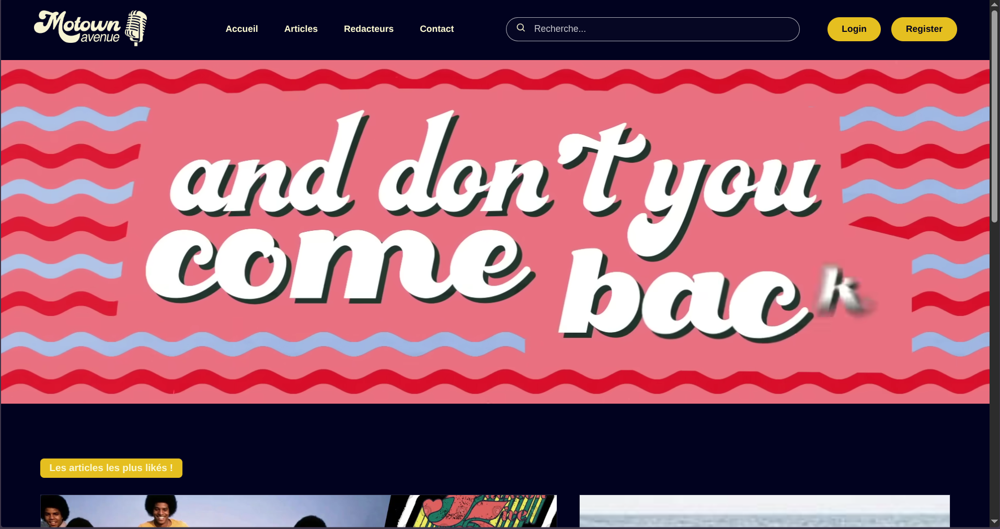
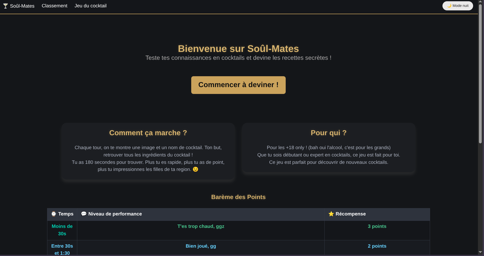
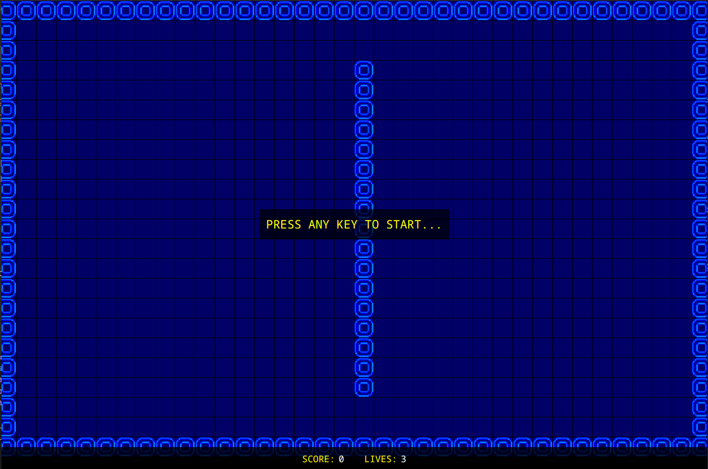
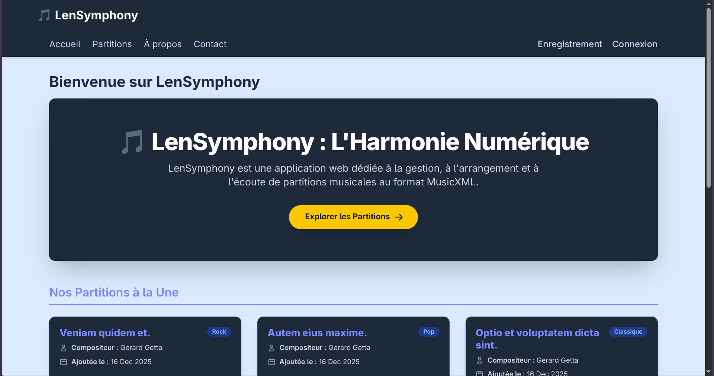
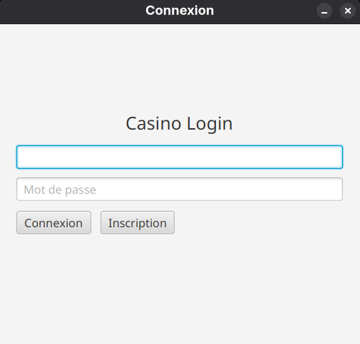
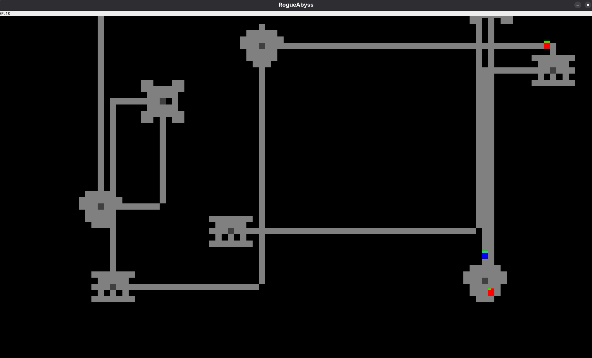
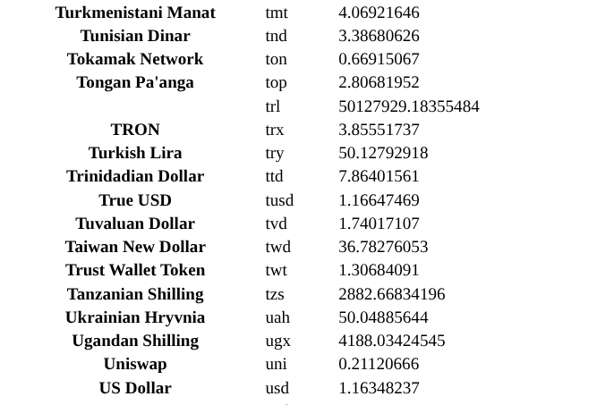
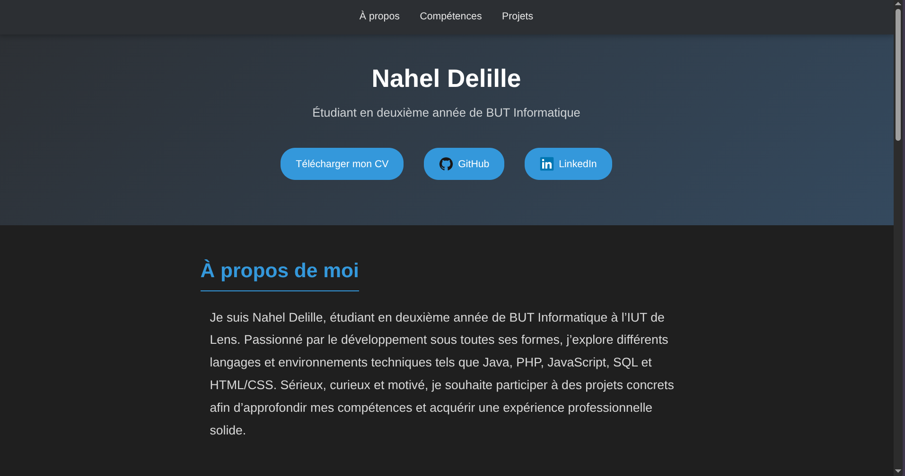

About Me
I am Nahel Delille, a second-year Computer Science student at IUT de Lens. Passionate about development in all its forms, I explore different languages and technical environments such as Java, PHP, JavaScript, SQL, and HTML/CSS. Serious, curious, and motivated, I aim to participate in real projects to deepen my skills and gain solid professional experience.
Skills
IUT Projects
Motown Avenue
Website developed in a team of 4 MMI students as part of the Web Marathon.
Soûl-Mates
Quiz website created by a team of 4 students as part of a class project.
Pacman Java
Pacman game developed in a group of 4 students as part of an IUT project, entirely in Java.
Lensymphony
Music synthesizer developed in Java with an associated website to generate music online. Team project of 4.
Personal Projects
JavaFX Casino
Casino application in JavaFX with Blackjack and Heads or Tails, developed solo.
RogueAbyss
2D Roguelike in Java Swing (in progress).
Simple Currency Exchange
Flask web app to convert amounts from one currency to another via an API (in progress).
Personal Portfolio
My web portfolio developed with HTML, CSS, and JavaScript.
